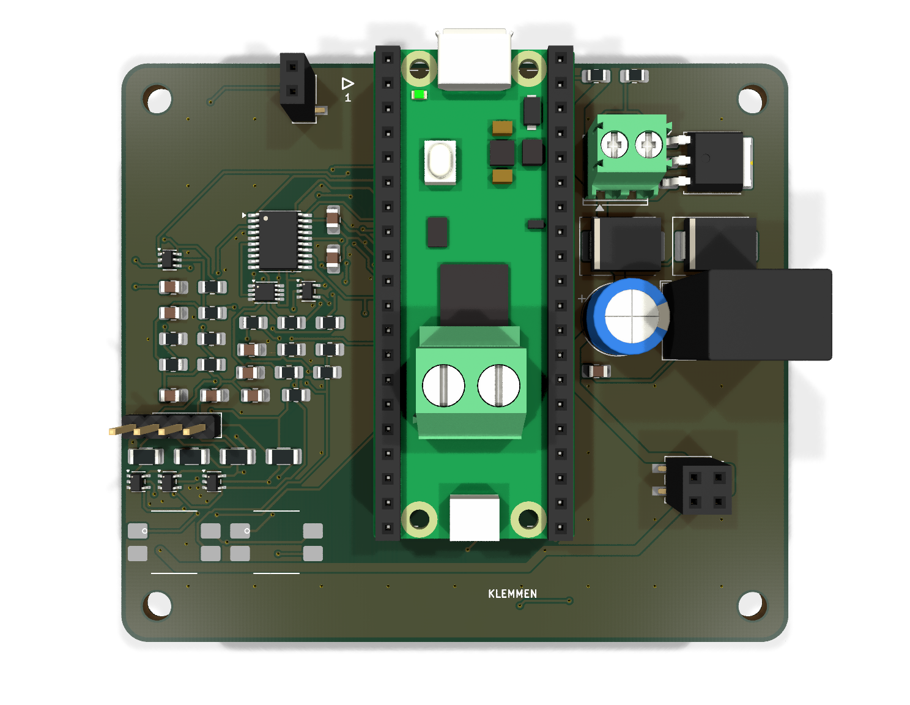
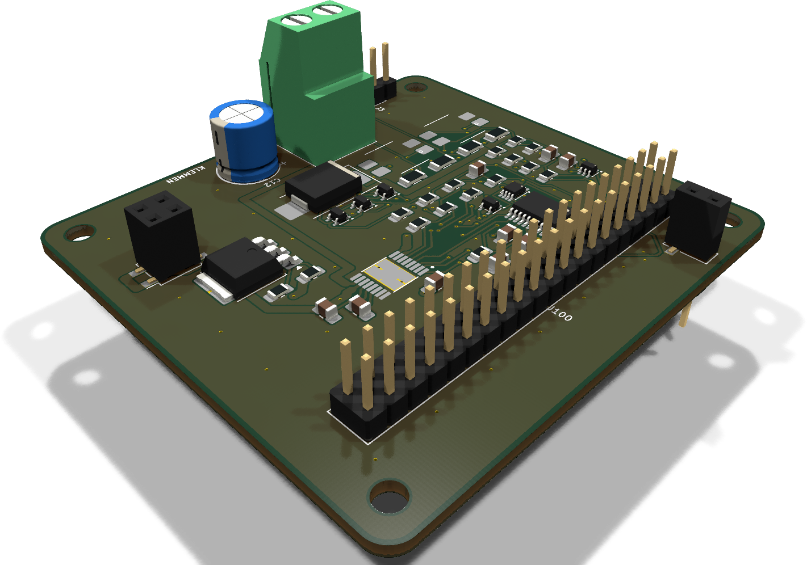
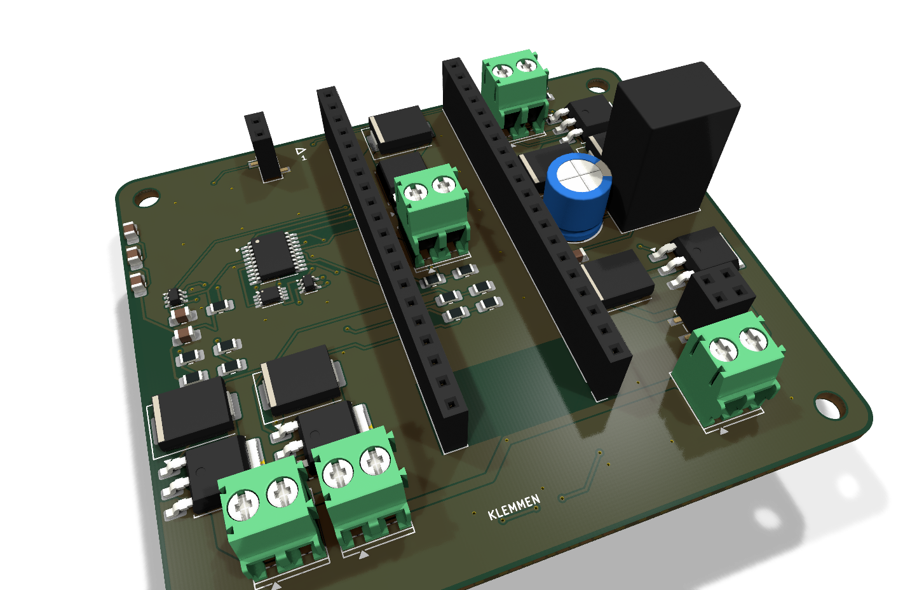
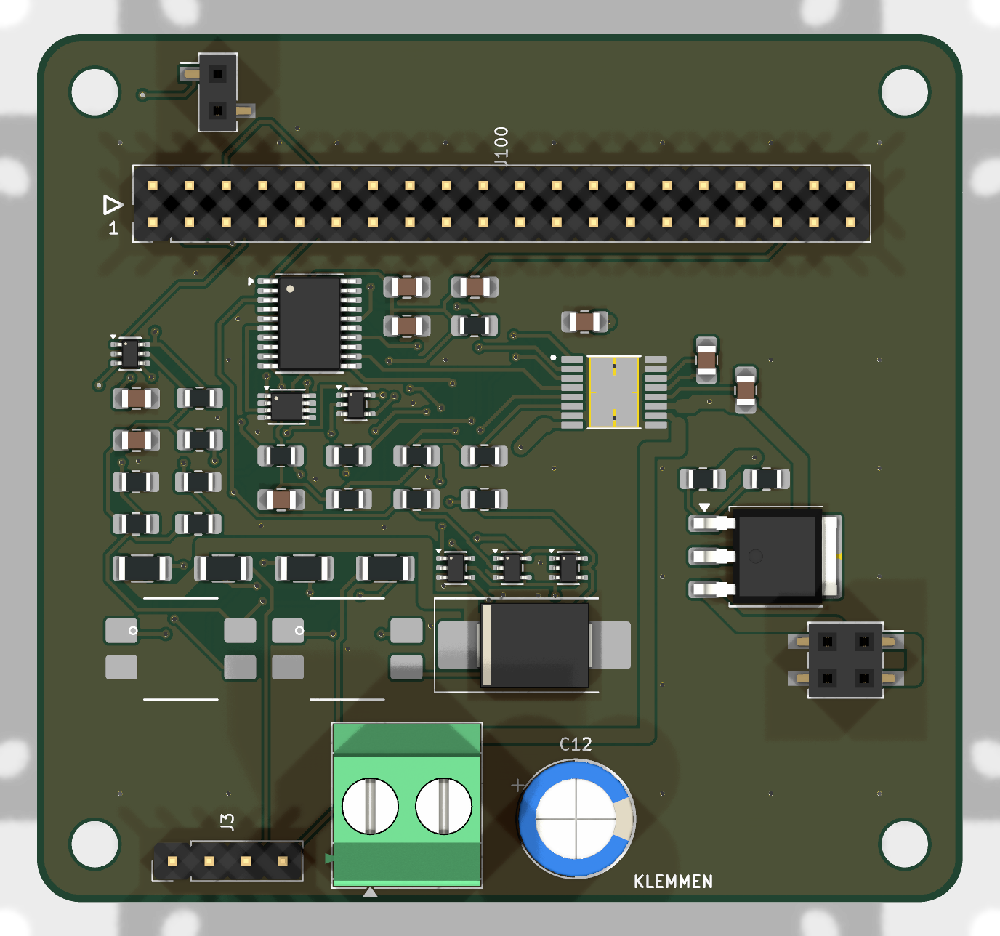
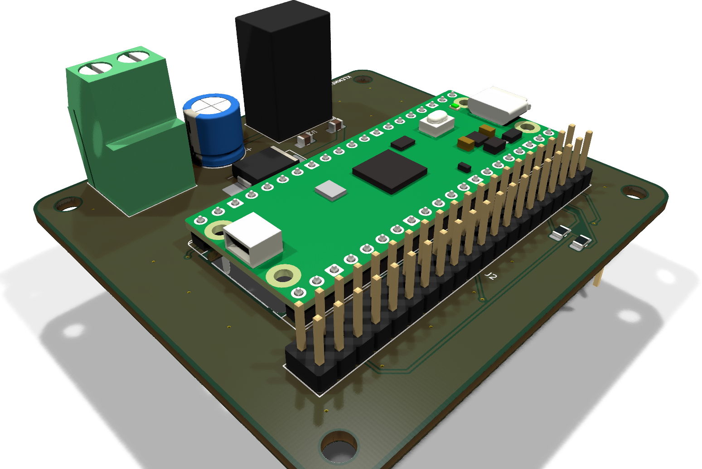

One board plugs into a Pico.
That's the stack.
PicoStack v2 abolishes the base board. Every module now carries its own 6–30 V supply, reverse-polarity protection and a pair of Pico-native socket rows — so the Pico plugs in directly, on top of a single module, and you have a working device. Stack more modules and one fed board powers the whole chain through a shared rail; 18 spare GPIOs come out as labelled solder pads on every board's edge.

Not drawn. Built.
There is no hand-drawn schematic and no hand-routed board in this repository. Each board is a pipeline of small, readable Python stages — and the committed KiCad files are their verified output.
# one board, end to end tools/sch/<board>.py → KiCad schematic, ERC-clean, self-checked tools/pcb/spec_<board>.py → placement · pre-routes · stitching (pure Python) tools/pcb/build.py → fresh .kicad_pcb from netlist + spec tools/pcb/autoroute.py → freerouting 2.3 headless, DSN repaired on the fly tools/pcb/masseheiler.py → finds isolated ground copper, heals it with vias tools/pcb/steckerprobe.py → measures the finished board against the contract
Reproducible
Clone, run the pipeline, get a board. Every generated file is held against its generator by a test, so nothing can silently go stale.
Contract-driven
Connector positions, pin roles and copper keep-outs live in one machine-readable file. Boards are measured against it — not against hope.
Verified for real
ERC and DRC caught none of the real bugs found while building this — including a fail-unsafe e-stop gate and a reverse-polarity FET that crowbarred instead of blocking. The project's own probes caught them all, each with a proof that it can fail.
The v2 board family
Four boards today, all 75 × 65 mm, all routed and DRC-clean: a motor module and a family of three LED dimmer modules generated from one parametric description. Each carries its own supply, its own pair of Pico-native socket rows, and the same edge-pad breakout — there is no separate base board in the v2 line-up any more.

Motor module routed · DRC clean
A DRV8876 H-bridge with its own STM32C011 co-processor.
- up to 2.5 A motor current, current-chopping limit
- dual-channel opto-isolated emergency-stop loop — non-inverting driver, so a broken wire stops the motor, not the other way round
- own 6–30 V supply cell, flashable through the stack via the token chain

LED dimmer family 1 / 3 / 4 channels · DRC clean
Three contract variants (module types 0x10–0x12) generated from a single parametric description — one schematic generator, one board spec, three boards.
- low-side N-MOSFET per channel (NCE6020AK), PWM from the module MCU on its own hardware timer channel — freed from the motor board's shared scaffold, which used to cost the dimmers two PWM channels
- flyback diode and 3.5 mm screw terminal per channel, ~3 A each
- same supply cell and MCU nest as the motor module — the placement is inherited verbatim, pre-routes included

Every module, on its own the v2 change
- Pico-native stacking geometry. Two 1×20 socket rows, 17.78 mm apart on a 2.54 mm grid — the Pico's own pinout, not an arbitrary 2×20 block. The Pico plugs straight into the top of the stack and all 40 pins run down through it.
- A supply cell on every board. 3.5 mm screw terminal (6–30 V), reverse-polarity protection, TVS, a K7805-1000R3 regulator and a Schottky diode into VSYS. Any number of fed boards can coexist in one stack; one is enough for all of it.
- Every spare pin, broken out. The 18 free Pico GPIOs plus
several 3V3/GND pads come out as labelled solder pads
(
RANDPADS) on the board edge, on the bottom copper layer so the rotation-safety keep-out stays intact. - Room to fit it all. Boards grew from 64 × 60 mm to 75 × 65 mm — one size for every module, M3 pattern and rotation landing points scaled with it, the mating rule unchanged.

Base board v1 · archived
The board v2 makes unnecessary. It carried the Pico, the 24 V input and the 5 V rail as a separate board underneath every module — that job now lives on each module itself. Kept in the repository and on the v0.1.0 release for archive purposes; not part of the v2 product line, and not updated to the v2 contract.
The contract
tools/stack_spec.py is the single source of truth for anyone
building a module. It is deliberately small — and everything else is
derived from it: documentation, tests, and the probes that measure a
finished board.
- Geometry. 75 × 65 mm outline, M3 hole pattern, two Pico-native 1×20 socket rows — computed through helpers, never typed by hand.
- Pin roles. Which stack pin carries the shared supply rail, I²C, the e-stop loop, the flash chain; which pins a module must not use, and why. Unchanged since v1 — v2 only changed the connector geometry, not a single pin's role.
- Per-module supply. Reverse-polarity topology, TVS window, Schottky-OR into VSYS — asserted, not just built once and trusted.
- Edge pads. Every pin declared "free" gets exactly one labelled solder pad at a fixed contract position, on every module, checked against the built board.
- Landing points. Areas where a rotated stack's pins would touch a board must carry no exposed copper — so a mis-assembled stack cannot short the supply rail into a signal. The probe measures the real board, not the intention.
- Mating rule. Sockets on top, mirrored headers below, one documented assembly order — because a mirrored 2×02 header once put 24 V on GND, and neither ERC nor DRC could ever have seen it.
# a taste of the real thing
STECKER_POS = {
"stapel_links": ..., # 1x20, Pico pins 1-20
"stapel_rechts": ..., # 1x20, Pico pins 21-40, mirrored
"kette": ..., # token chain, 1x02 SMD pair
"leistung": ..., # shared supply rail, 2x02 SMD pair
}
PIN_ROLLE = {1: "FLASH_TX", ...} # unchanged since v1
RANDPADS = {...} # 18 free GPIOs + 3V3/GND, B.Cu solder pads
VERSORGUNG = {...} # reverse-polarity, TVS, Schottky-OR assertions
NICHT_BELEGBAR = {30: "...", 35: "..."}
LANDEPUNKTE_VERDREHT() # measured against the built board
MONTAGE_REGEL = "stecken, dann schrauben"
Checks must be able to turn red
The engineering rule this project is built on:
A calculated dimension is a promise. A promise needs a check — and a check needs proof that it fails when the promise is broken.
Every gate in the toolchain ships with its red proof: the mirrored connector that would have shorted the stack, the arc that quietly broke the mounting holes, the solder-mask margin hidden inside a vendor footprint, the router that hangs on almost-straight wires — all found by project probes, all documented in the code next to the check that now prevents them.
The v2 redesign found four more, all in v1 circuits that had already passed ERC and DRC:
- A fail-unsafe e-stop. The emergency-stop gate was an inverting buffer: an intact loop blocked the motor and a broken wire released it — backwards. Swapped for a non-inverting part with the same pinout; the polarity probe now goes red on the old one.
- A reverse-polarity FET wired to crowbar, not block. The protection FET's drain sat at the local 24 V rail instead of the input — so reverse voltage turned its body diode and the TVS into a short circuit instead of an open one.
- A VSYS pin the contract itself forbids. The new supply cell's
first draft used a pin
NICHT_BELEGBARalready ruled out — it would have fed nothing. - A shared scaffold hard-wiring motor signals onto every module. Placement code copied from the motor board silently routed motor-only nets onto the dimmers too, costing them two hardware PWM channels before anyone noticed.
Help it grow
The dream: a whole family of PicoStack hats, designed by different people, in different tools and languages, all speaking the same contract. Four boards exist — the rest is open.